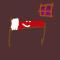

Вкладка "Новости" готова!
Добавлен первый проект, а так же
Готова финальная версия сайта.
Сайт полностью готов и выгружен!
1 / 1

Добро пожаловать на мой личный сайт. Здесь я делюсь своими проектами и новостями.
Вкладка "Новости" готова!
Добавлен первый проект, а так же
Готова финальная версия сайта.
Сайт полностью готов и выгружен!